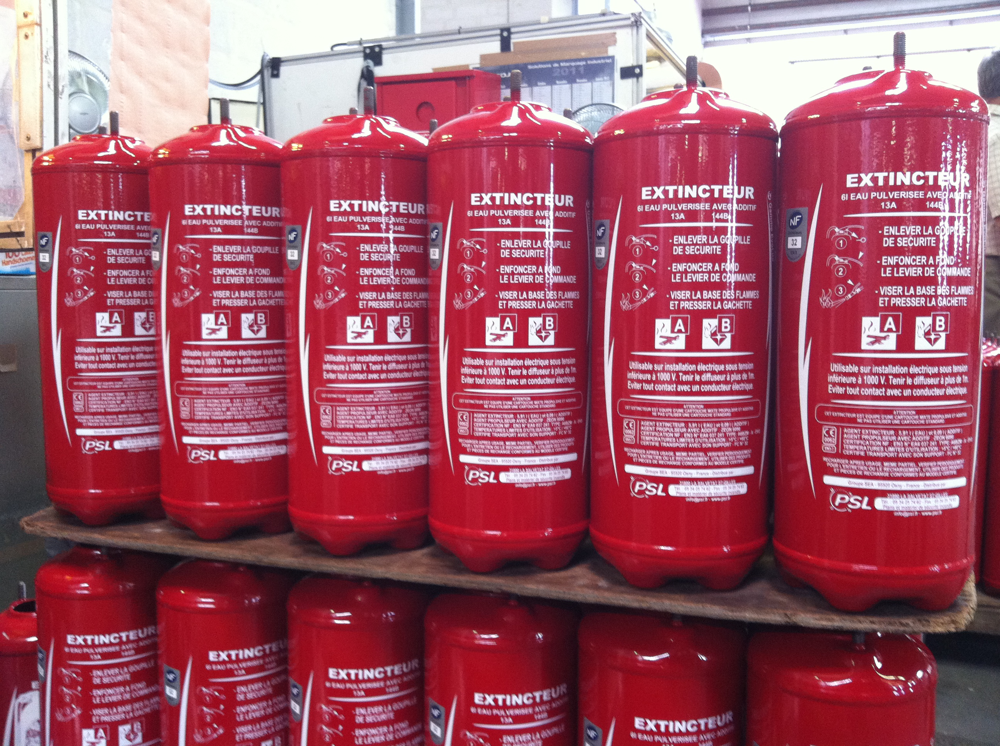
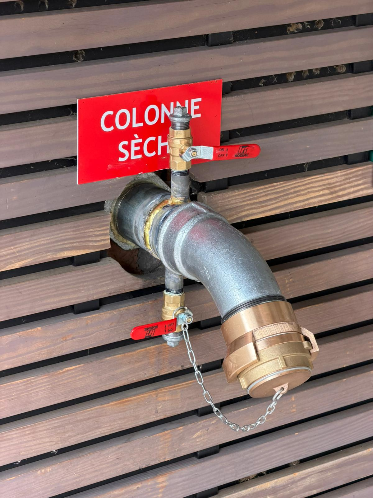
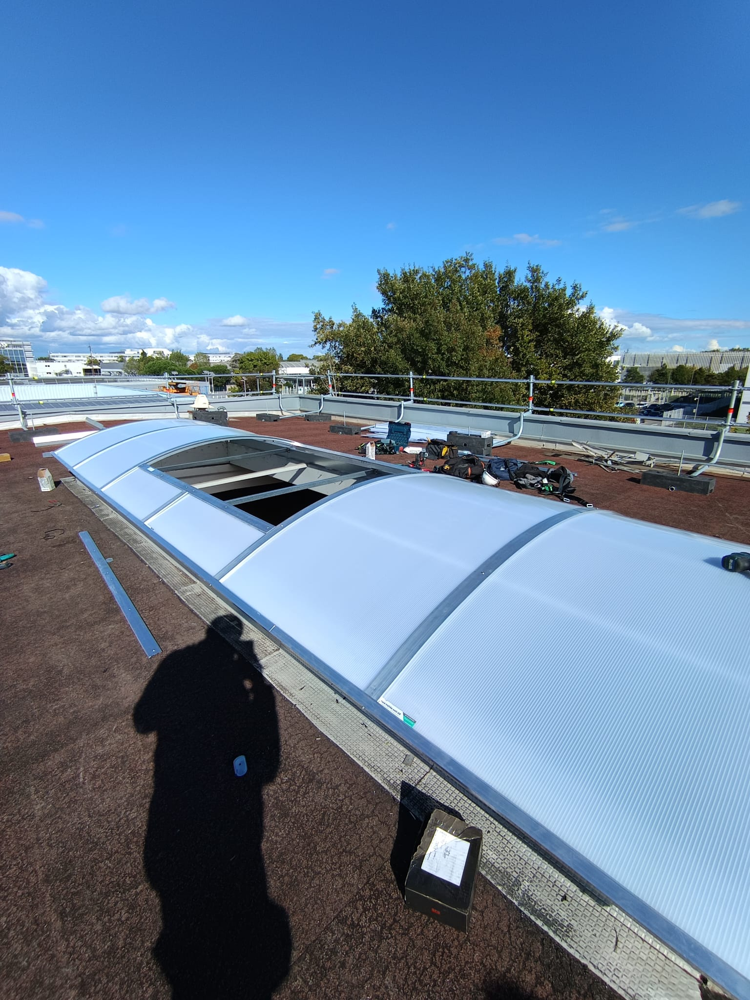

Plans d'évacuation & d'intervention :
la fondation de votre sécurité incendie
En cas d'incendie, chaque seconde compte. Un plan de sécurité clair et à jour permet à chaque occupant — personnel, client, résident — de trouver immédiatement la sortie la plus proche et au service d'intervention de localiser tous les moyens de lutte. Obligatoire dans l'ensemble des ERP, IGH et locaux de travail, le plan doit être conforme à la norme NF X 08-070 (qui remplace la NF S 60-303), mis à jour à chaque modification des locaux et affiché à chaque niveau, à proximité des accès.
PSL conçoit vos plans à partir de vos plans de bâtiment (PDF, DWG, esquisse papier ou visite terrain), intègre l'intégralité des informations réglementaires et vous livre un document prêt à l'affichage dans le support de votre choix.
Nos plans disponibles
- Plan d'évacuation — voies de dégagement, sorties de secours, point de rassemblement, emplacements extincteurs et RIA
- Plan d'intervention pompiers — coupes des fluides, colonnes sèches, locaux à risques, adresse des commandes de sécurité incendie
- Plan de chambre — pour hôtels, EHPAD, résidences étudiantes — voies de sortie depuis chaque chambre
- Consignes générales & spécifiques — rédigées selon votre activité et le type d'établissement
Obligation réglementaire : tout ERP et tout local de travail doit disposer de plans de sécurité incendie affichés par niveau, à proximité des escaliers et des accès principaux. En l'absence de plan ou en cas de plan non conforme, votre responsabilité civile et pénale est engagée.

Pourquoi choisir PSL pour vos plans ? Fabrication en atelier à La Salvetat St Gilles, techniciens formés à la réglementation incendie, relecture norme incluse. Mise à jour gratuite lors d'une maintenance PSL si vos équipements ont évolué.
Signalétique de sécurité incendie :
visible, durable, conforme
La signalétique incendie est le fil d'Ariane qui guide vos occupants vers la sortie — même en conditions de fumée, même en panique. Chaque panneau, chaque pictogramme doit être normalisé selon la NF EN ISO 7010, correctement positionné et maintenu lisible. Une signalisation déficiente ou non conforme expose votre établissement à des sanctions lors des visites de la commission de sécurité.
PSL vous fournit l'intégralité de la signalétique obligatoire et complémentaire : des consignes personnalisées à votre activité aux panneaux photoluminescents rechargés par la lumière ambiante, visibles jusqu'à 30 minutes après extinction des feux.
Nos références signalétique
- Panneaux extincteurs — repérage obligatoire de chaque appareil (NF EN ISO 7010 — F001)
- Panneaux RIA — balisage des robinets d'incendie armés
- Signalisation photoluminescente — flèches directionnelles, sorties de secours, points de rassemblement
- Consignes générales — "En cas d'incendie" avec pictogrammes NF
- Consignes personnalisées — adaptées à votre activité (hôtel, industrie, ERP spécialisé)
- Panneaux interdiction de fumer et zones ATEX si nécessaire
- Balisage des issues de secours — conforme à la réglementation ERP/IGH

À savoir : depuis 2013, tous les panneaux de sécurité doivent utiliser les pictogrammes de la NF EN ISO 7010. Les anciennes consignes avec des pictogrammes non conformes doivent être remplacées.
Extincteurs certifiés NF :
le bon agent pour chaque classe de feu
L'extincteur portatif est le premier moyen d'intervention entre la découverte d'un départ de feu et l'arrivée des secours. Son efficacité dépend entièrement d'un choix adapté : le mauvais agent extincteur peut être inefficace, voire dangereux (eau sur feu électrique, CO2 en espace confiné non ventilé). PSL vous guide dans le choix de l'équipement le mieux adapté à vos risques et à la configuration de vos locaux.
Tous nos extincteurs sont certifiés NF EN 3, marqués CE, et livrés avec leur étiquette réglementaire. La vérification annuelle par un technicien qualifié est obligatoire (Art. R4227-39 du Code du Travail, norme NF S 61-920).
Notre gamme extincteurs
- Extincteur eau + additif — classes A et B. Idéal feux de matières solides et liquides. 6 L et 9 L. Usage général en bureaux, commerces, hôtels.
- Extincteur poudre ABC — classes A, B et C. Feux solides, liquides et gaz. De 1 kg à 9 kg. Très polyvalent, à positionner dans locaux avec risques gaz ou véhicules.
- Extincteur CO2 — classes B et feux électriques. Sans résidu, indispensable en salle informatique, tableau électrique, labo. 2 kg et 5 kg.
- Extincteur sur roue — 25 L à 50 kg pour sites industriels, entrepôts, ateliers à fort potentiel calorifique.
- Extincteur eau pulvérisée avec additif — classes A, B et feux de cuisine (classe F). Adapté aux restaurants et cuisines professionnelles.
Transition PFAS : depuis 2023, les extincteurs à mousses fluorées (AFFF, FFFP) sont interdits à la vente. PSL propose l'ensemble des agents extincteurs sans PFAS (sans fluor) conformes à la réglementation 2030. Voir la page dédiée →

Règle de base pour l'implantation : En ERP, au minimum 1 extincteur pour 200 à 300 m² selon la classe de risque, et jamais à plus de 15 m d'un poste de travail. PSL réalise un audit d'implantation gratuit lors de toute intervention.
Robinets d'Incendie Armés :
l'eau au bon endroit, au bon débit
Le RIA est un moyen d'extinction permanent, connecté directement au réseau hydraulique du bâtiment. Contrairement à l'extincteur, il offre une alimentation continue en eau et permet d'intervenir sur des surfaces bien plus importantes. Obligatoire dans les ERP de catégories 1 à 4 selon leur activité, il constitue un maillon essentiel du dispositif de sécurité actif.
PSL vous fournit les RIA, les dévidoirs et l'ensemble des accessoires hydrauliques. Nos techniciens assurent l'installation, la mise en eau et la vérification annuelle réglementaire conforme à la norme NF EN 671-3, ainsi que l'épreuve quinquennale des tuyaux.
Gamme RIA disponible
- RIA DN19 — dévidoir à jet d'eau diffusé. Locaux à risques courants (potentiel calorifique < 500 MJ/m²). Bureaux, commerces, hôtels.
- RIA DN25 — dévidoir semi-rigide. Locaux à risques moyens (PC 500–900 MJ/m²). Entrepôts légers, ateliers, restauration.
- RIA DN33 — tuyau souple grande capacité. Locaux à risques élevés. Industrie, stockage, sites classés ICPE.
- Longueurs — 20 m et 30 m selon configuration du bâtiment
- Dévidoirs — muraux fixes, pivotants 180°, sur pied mobile
- Accessoires — robinets d'arrêt, vannes, raccords, manomètres, surpresseurs

Obligation : la vérification annuelle des RIA est imposée par l'arrêté du 25 juin 1980 pour les ERP. Elle comprend le contrôle du débit, de la pression, de l'état du tuyau et des organes de manœuvre. PSL prend en charge ce suivi annuel dans le cadre d'un contrat d'entretien.
Blocs autonomes d'éclairage de sécurité :
guidez l'évacuation même dans l'obscurité
En cas d'incendie, la coupure de l'éclairage normal est fréquente. Les BAES (Blocs Autonomes d'Éclairage de Sécurité) prennent alors le relais pour baliser les voies d'évacuation et prévenir les mouvements de panique. Leur présence est obligatoire dans tous les ERP, IGH et locaux de travail de plus de 50 personnes, et leur fonctionnement doit être vérifié régulièrement.
PSL vous fournit et installe la gamme complète de BAES adaptée à vos locaux : de l'éclairage d'évacuation standard aux systèmes SATI qui s'auto-testent automatiquement, supprimant le test manuel mensuel de votre charge de travail.
Gamme BAES disponible
- BAES Évacuation standard — 45 lumens, autonomie 1 heure. Balisage des couloirs, escaliers et issues. (NFC 71-800)
- BAES SATI auto-testable — système de test intégré automatique. Élimine le test manuel mensuel, génère des rapports d'état. (NF C 71-820)
- BAES Anti-panique / ambiance — éclairage ≥ 1 lux sur toute la surface. Obligatoire dans salles ≥ 100 personnes (RdC) ou 50 (sous-sol). (NFC 71-801)
- BAEH locaux à sommeil — hôtels, EHPAD, résidences. Autonomie 5 heures pour les chambres et couloirs. (NFC 71-805)
Astuce réglementaire : les BAES SATI permettent un suivi automatique conforme sans mobiliser votre équipe. Chaque bloc génère en temps réel un signal d'anomalie. PSL vous propose la migration vers des BAES SATI lors du renouvellement de votre parc.

Télécommande et flux de mise en sécurité : Dans les ERP de catégories 1 et 2, le bloc doit être commandé par le SSI via un flux de mise en sécurité. PSL vérifie la compatibilité de vos BAES avec le système d'alarme existant.
Alarmes incendie :
déclenchez l'alerte avant qu'il ne soit trop tard
L'alarme incendie est le premier maillon de la chaîne d'évacuation. Elle doit être entendue de tous, en tout point du bâtiment, pour permettre une évacuation rapide et ordonnée. La réglementation française impose le type d'alarme en fonction de la catégorie d'ERP et de l'activité exercée : du simple appareil autonome à piles pour un ERP de 5e catégorie, jusqu'au système SSI complet avec CMSI pour les grandes surfaces recevant du public.
PSL vous propose les équipements d'alarme de type 4 (le plus répandu dans les ERP de 5e catégorie et les locaux professionnels), ainsi que les accessoires nécessaires à leur bon fonctionnement et à la traçabilité réglementaire.
Nos équipements alarme
- Alarme type 4 autonome — centrale à pile intégrant déclencheur manuel et diffuseur sonore ≥ 90 dB. ERP 5e catégorie et locaux professionnels.
- Déclencheurs manuels (DM) — brise-glace ou poussoir. Pose réglementaire entre 1,10 m et 1,30 m, à proximité des sorties.
- Diffuseurs sonores & sirènes — 90 à 110 dB selon la surface et l'ambiance sonore du local.
- Flash lumineux — signal lumineux pour personnes malentendantes, vestiaires, locaux bruyants.
- Capots de protection — anti-vandalisme pour déclencheurs manuels exposés.
- Boîtiers de report et télécommandes — report d'alarme en loge, standard ou poste de sécurité.

Registre de sécurité : chaque test mensuel, chaque remplacement de batterie, chaque intervention sur l'alarme doit être consigné dans le registre de sécurité. PSL assure le suivi documentaire dans le cadre de son contrat de maintenance annuelle.
Accessoires incendie :
les compléments indispensables à votre dispositif
Au-delà des équipements principaux, votre installation incendie doit être complétée d'accessoires réglementaires ou opérationnels. Du registre de sécurité (document officiel que tout établissement doit tenir à jour) aux colonnes sèches destinées aux sapeurs-pompiers, PSL vous fournit l'ensemble de ces éléments pour assurer la complétude de votre dispositif.
Nos accessoires disponibles
- Colonnes sèches — alimentation réservée aux sapeurs-pompiers. Obligatoires dans les bâtiments ≥ 7 niveaux ou répondant aux critères IGH. Raccordement instantané Ø 65 mm normalisé.
- Bacs à sable — extinction des feux de classe D (métaux alcalins : sodium, potassium, magnésium) et absorption de liquides inflammables. Capacités de 25 L à 100 L.
- Couvertures anti-feu — étouffement de petits feux (classe F — huiles de cuisson, bougies, vêtements en feu). Standard EN 1869.
- Bacs à eau — réserves d'appoint pour extinction naturelle dans locaux sans eau courante.
- Registres de sécurité incendie — cahiers officiels pour consigner vérifications, incidents et travaux. Obligation légale pour tous les ERP et locaux de travail.
- Ouvrants de désenfumage — entrebâilleurs, crémones et accessoires pour volets et lanterneaux de désenfumage naturel.
- Panneaux signalétiques colonnes sèches — balisage des prises d'alimentation et de refoulement.

Équipements de sécurité des personnes :
protégez vos collaborateurs au-delà de l'incendie
La sécurité incendie ne se limite pas à éteindre les flammes : elle inclut la protection physique des personnes lors d'une intervention ou d'une évacuation, et la capacité à prodiguer les premiers secours avant l'arrivée du SAMU. Depuis 2019, l'installation d'un défibrillateur automatisé externe (DAE) est rendue obligatoire dans un nombre croissant d'établissements recevant du public.
Notre gamme sécurité personnes
- Trousses de premiers secours — conformes aux recommandations de l'INRS. Standard, murale, portable selon effectif et activité.
- Défibrillateurs automatisés externes (DAE) — entièrement automatiques, utilisables par toute personne même non formée. Obligatoires dans les ERP de catégories 1 à 3 depuis 2022.
- Armoires à pharmacie — murales, verrouillables, répertoriées dans le registre de sécurité.
- EPI intervention incendie — gants résistants à la chaleur, lunettes de protection, casques, combinaisons ignifugées pour les équipiers de première intervention.
- Signalétique premiers secours — balisage des trousses et DAE selon NF EN ISO 7010.

Bon à savoir : le DAE doit être placé dans un endroit signalé, facilement accessible 24h/24, et son emplacement communiqué au service d'aide médicale urgente (SAMU / 15). PSL se charge du balisage et de l'enregistrement auprès des services compétents.
Protection incendie pour particuliers :
la maison aussi a ses obligations
Depuis la loi du 9 mars 2010 et son décret d'application du 11 décembre 2011, tout logement doit être équipé d'au moins un DAAF (Détecteur Avertisseur Autonome de Fumée). Cette obligation, entrée en vigueur le 8 mars 2015, s'applique à tous les logements en France — propriétaires comme locataires. PSL vous propose une gamme complète d'équipements pour sécuriser votre domicile au-delà du simple détecteur réglementaire.
Nos produits pour particuliers
- DAAF (Détecteur Avertisseur Autonome de Fumée) — conforme NF EN 14604. Alarme sonore ≥ 85 dB. À poser au plafond de chaque logement, idéalement dans le couloir desservant les chambres.
- Extincteurs domestiques — 1 L à 2 L eau + additif pour cuisine, garage, salon. Légers, maniables, sans risque de dégradation des meubles.
- Couvertures anti-feu — indispensable en cuisine pour éteindre une casserole en feu (classe F). À portée de main, proche de la gazinière.
- Kits de sécurité maison — pack complet comprenant DAAF + extincteur 1 L + couverture anti-feu + guide des bons réflexes.
Responsabilité : en cas de location, c'est au locataire d'installer le DAAF, mais au propriétaire de fournir le logement avec les conditions permettant son installation et d'en assurer le renouvellement en cas de panne non imputable au locataire. En copropriété, les parties communes sont sous la responsabilité du syndic.